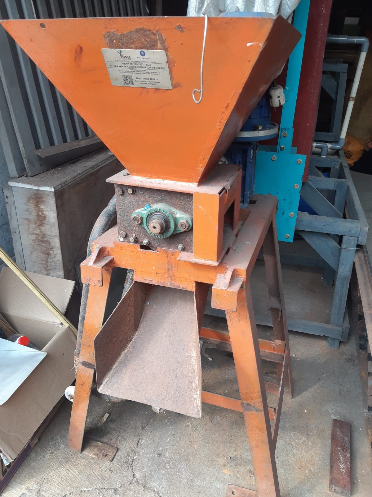
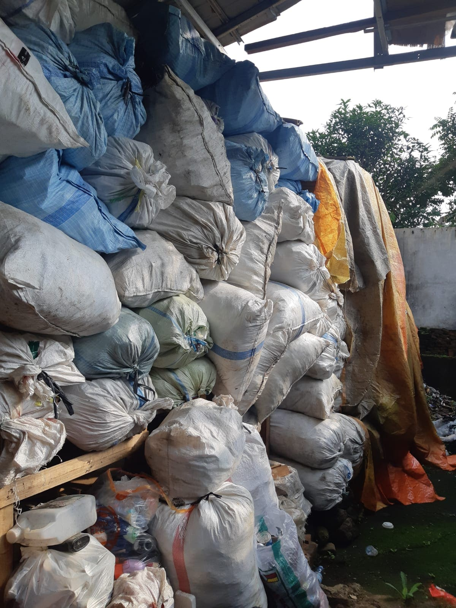
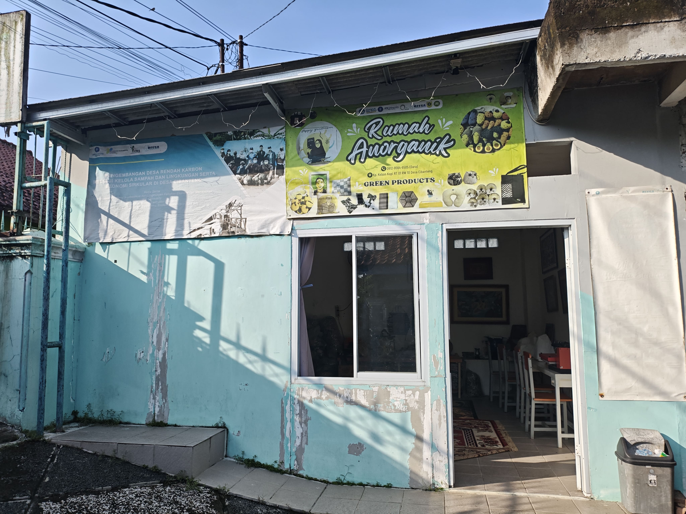
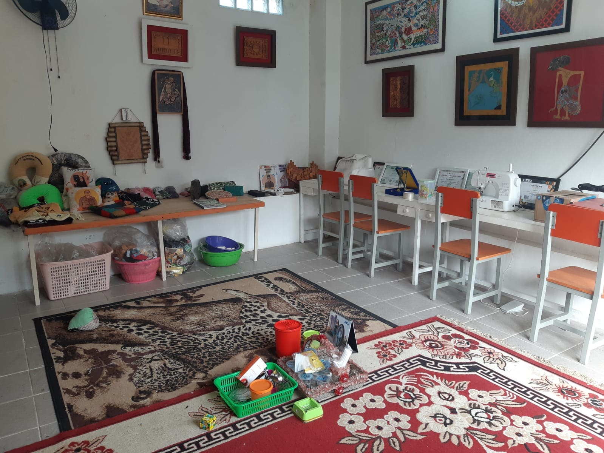
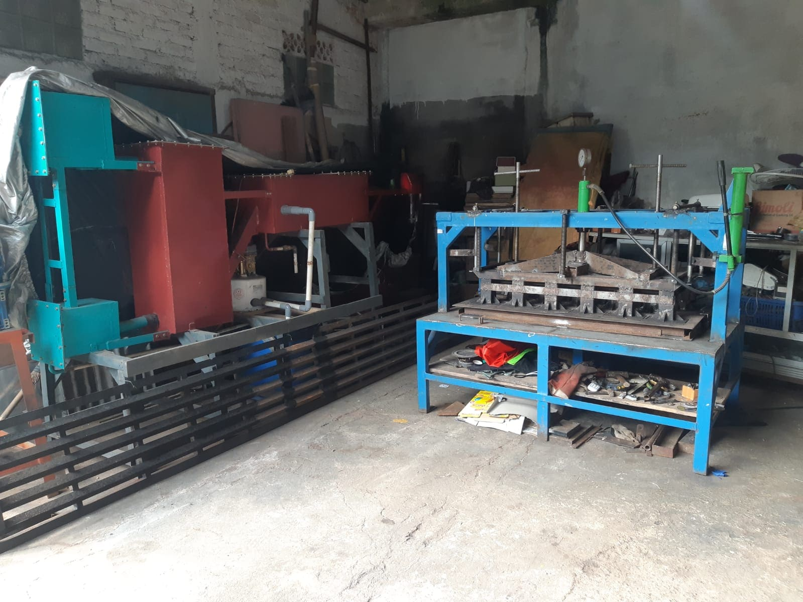

03
Fasilitas & Inovasi
Mesin &
Teknologi Produksi
Diawali dari mesin rakitan tangan sendiri, kini Rumah Anorganik Cibanteng dilengkapi peralatan yang terus berkembang berkat dukungan berbagai pihak.

Mesin — 01
Mesin Cacah
Mencacah sampah plastik utuh menjadi serpihan kecil sebagai persiapan bahan baku produksi. Awalnya dirakit sendiri oleh Bapak Mukhlis.

Mesin — 02
Alat Cetak Produk
Mencetak pasta plastik panas menjadi produk jadi dengan berbagai bentuk dan ukuran sesuai kebutuhan.

Gudang Bahan Baku
Penyimpanan
Gudang Bahan Baku
Gudang bahan baku kami menampung sampah plastik yang telah dikumpulkan dan dipilah dari masyarakat sekitar. Plastik dikategorikan berdasarkan jenis dan kondisi sebelum masuk ke proses produksi.
Rp 10.000
per Kg
Plastik sudah dicacah
Rp 400
per Kg
Plastik utuh dari warga
Kami membeli bahan baku dari warga sekitar sebagai bentuk pemberdayaan ekonomi komunitas.
Lokasi Kami
Tempat Produksi


